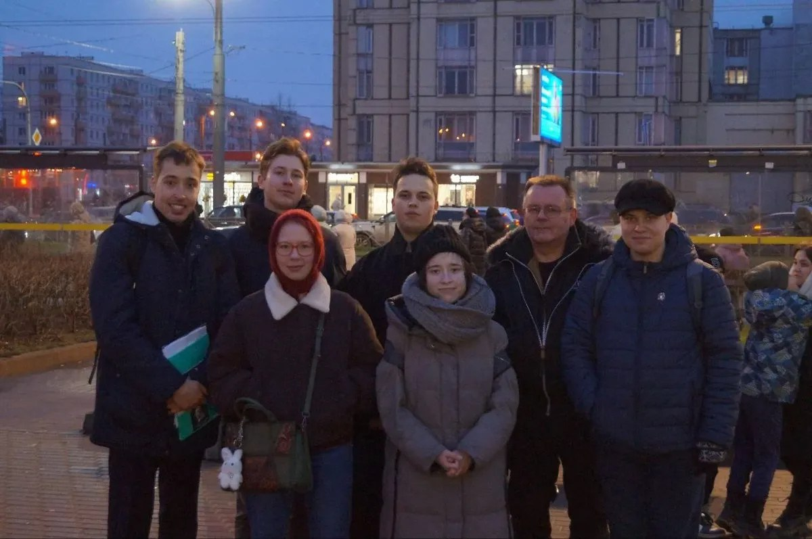
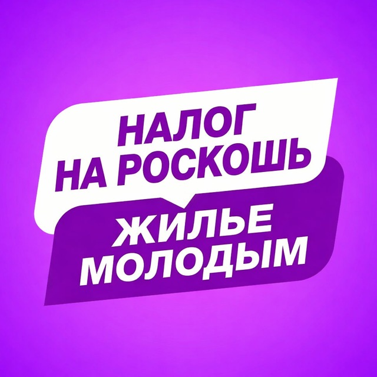
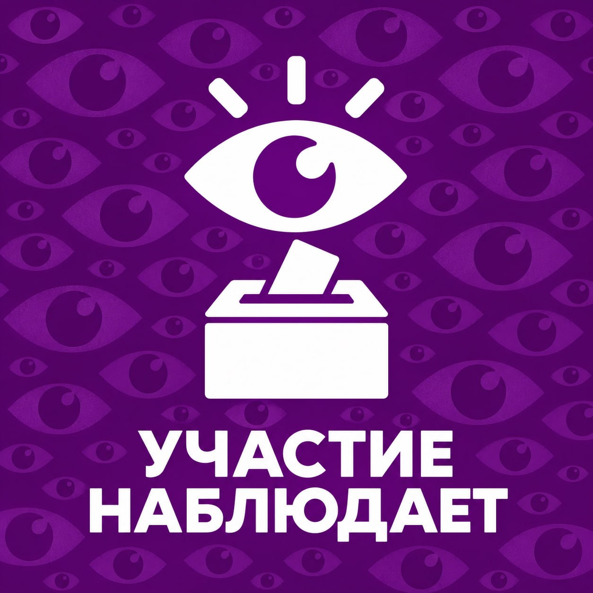
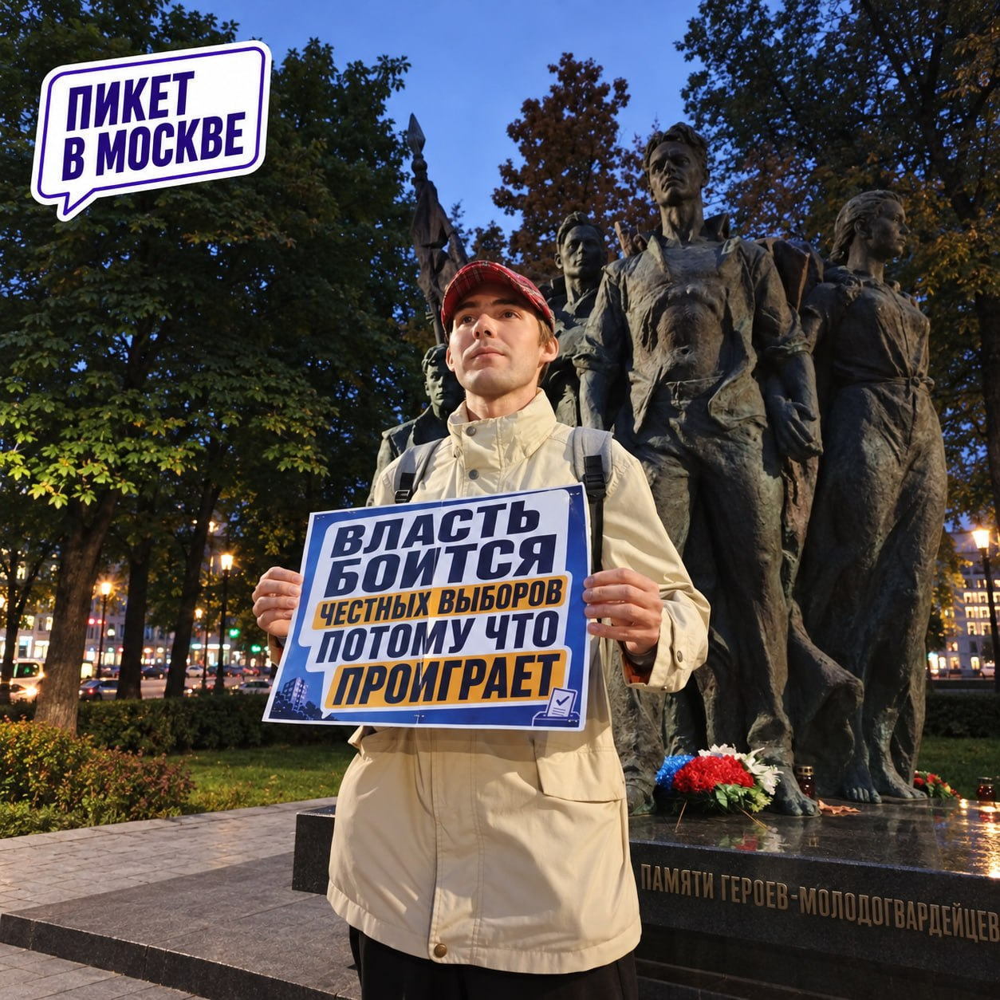
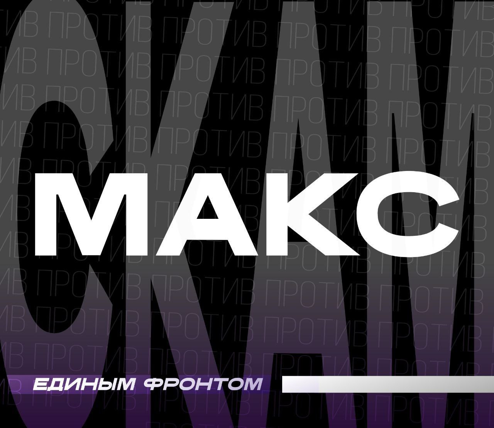
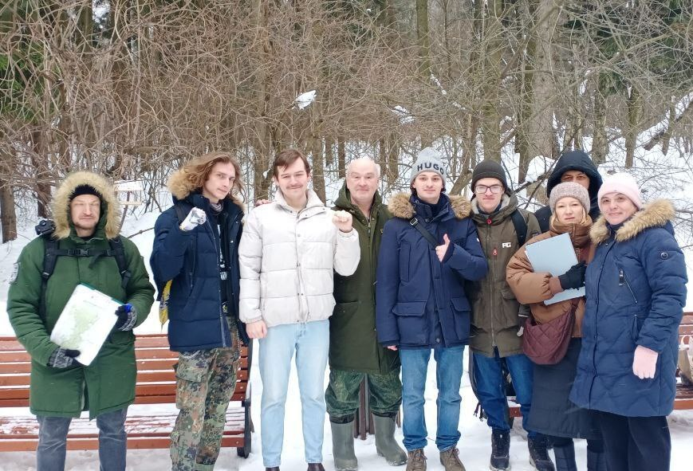

Участие — движение рациональных левых
Вместе боремся за свободу, демократию, равенство, права трудящихся. За новую Россию и новый мир.
Кто мы?
Мы – левое демократическое движение. Мы выступаем за интересы рабочих, за права людей и за демократизацию жизни.
При этом наша деятельность практико-ориентированная. Мы используем различные тактики: кампании, законодательные инициативы, связи с депутатами, участие в выборах, участие в местных проблемах, создание медиа и мероприятий – для борьбы за лучшее будущее.
Наша основа – рациональность, эффективное достижение целей. Слишком долго левые России отказывались от настоящей политики и объединения, подменяя борьбу спорами о прошлом и догматизмом.
Подписывайтесь на наш телеграм, чтобы следить за нами.
Перейти в TelegramЧто мы уже сделали
Мы не сидим в узком клубе, а строим общественную силу через реальные дела.

Доступный транспорт
Подняли тему грабительских цен на проезд в Петербурге. Поддержали активных молодых петербуржцев и показали общественный запрос на то, чтобы город работал на человека.
Читать в Telegram
Налог на роскошь
Федеральная кампания ради жилья для молодых. Поддержка десятков кандидатов от КПРФ, «Яблока» и «Зелёных», победа на дебатах, эфиры на «Живом Гвозде» и «Авроре», штабы в 10 регионах.
Читать в Telegram
Наблюдатели и поддержка
Поддержали прогрессивных кандидатов, призвали всех голосовать, а сами пошли в наблюдатели. Столкнулись с давлением, но защищали голос народа.
Читать в Telegram
Пикеты и обращения
Провели одиночные пикеты в 5 городах (в Ижевске — 7 раз). Массовая подача 500 писем помогла добиться, чтобы депутаты приняли наше обращение.
Читать в Telegram
Против мессенджера МАХ
Вместе с САФ и другими движениями стоим фронтом против навязывания студентам мессенджера МАХ. Дали студентам чёткий план, как отказываться от него в вузах.
Читать в Telegram
Защита Битцевского леса
Выступили против лыжероллерной трассы. Нашли союзников среди столичных экологистов, с которыми будем осваивать институт общественных инспекторов.
Читать в TelegramНаши материалы, мнения и аналитика
Последние публикации из нашего Telegram-канала и статьи участников.
Загружаем новости…
Общие принципы
Наша основа – рациональность, эффективное достижение целей.
Рациональность
Политическая борьба
Мы — протопартия
Активное участие в самых разных инициативах
Солидарность
А ты Участвуешь..?
Пишите в бот вступления, если хотите вступить в Участие и начать участвовать. Или в бот связи, если хотите сотрудничать и предложить идеи.